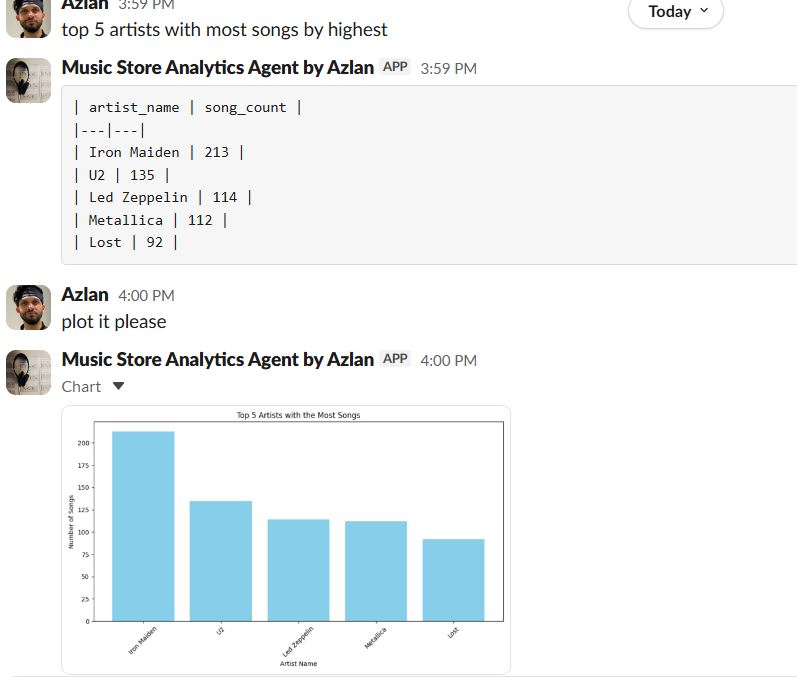
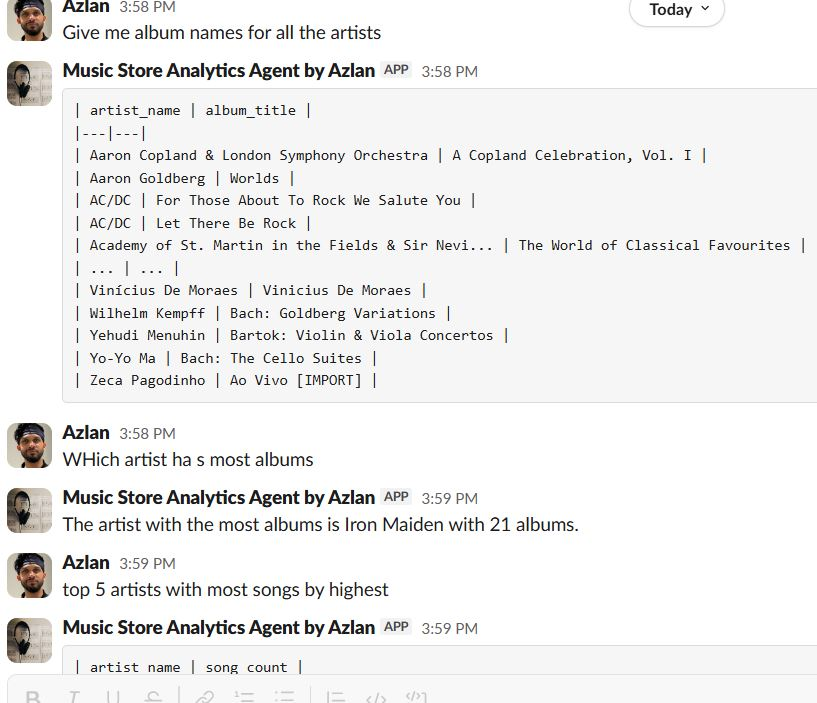
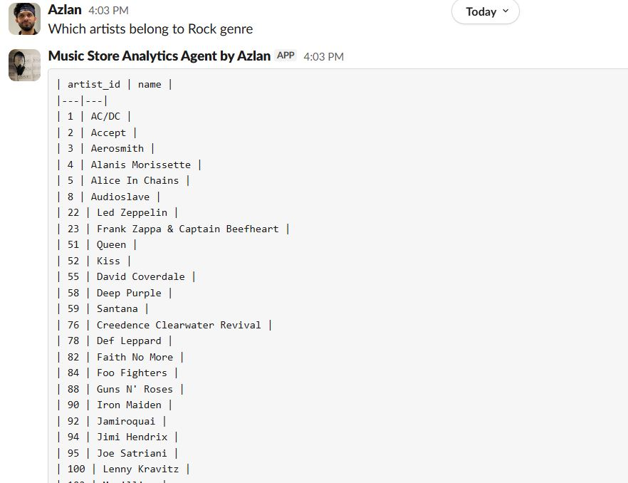
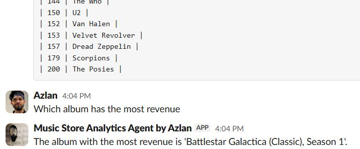
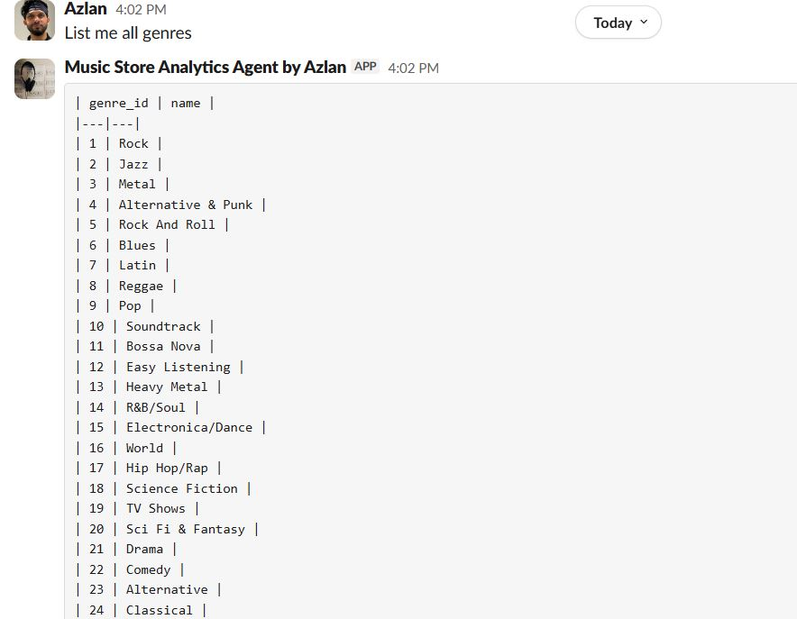

Music Store Analytics Slackbot
End-to-end agentic system for natural-language querying of a PostgreSQL database from Slack
A Slack-native “talk to your data” agent built from scratch, where every request id validated and passed through guardrails, resolve follow-ups with conversation memory, and run NL→SQL through a multi-step engine with a YAML semantic layer and generate a Slack output (tables and charts).
Overview
Every analytics question in Slack should be safe, in-scope, and answerable without directly using SQL. I built a complete agentic analytics system with connecting layers:
- Intake (Invoke): domain validations, read-only/prompt-injection/PII guardrails, greetings, LLM follow-up resolution.
- Engine : Planner (first turn vs follow-up), Orchestrator, Pandas AI Reasoner (NL→SQL: Chinook Database).
- Output: response builder (sending responses, tables and charts to Slack).
- Memory: per-channel short-term conversation history for follow-ups.
- Semantic Layer: YAML table/view definitions that limits what’s allowed and guide SQL generation
Together they form one product story: specialized intake and engine components plus the layer that makes it work in a single Slack pipeline.
The problem
- Business users need quick answers from the data but wouldn't want to access the database or wait on an analyst to get them.
- Follow-up questions (“top 3”, “chart that”) are ambiguous without conversation context.
- Sending out-of-scope, PII-seeking, or jailbreak-style prompts to an LLM is risky.
- NL→SQL needs schema awareness so queries match the real tables or data and not hallucinated ones that LLM might inevnt.
- So, I needed one system that validates scope, enforces safety, runs the right execution mode, and formats answers clearly in-channel
What was built
-
Intake (Invoke)
- Slack Bolt message handler (Socket Mode): extracts text and channel, wires the full flow.
- Validator: music-store domain check via keyword rules (case-insensitive).
- Guardrails: regex checks for PII terms, SQL Write operations (delete, drop, update, etc.), and prompt-injection patterns.
- Context resolver: LLM expands short follow-ups using the last user/assistant turn when the message doesn't have music keywords.
- Help & greeting: fixed responses for initial interactions.
-
Engine
- Planner: no prior context routes to
chat(first turn); existing history routes tofollow_up. - Orchestrator: coordinates the planner and reasoner.
- PandasAI Reasoner:
agent.chat()/agent.follow_up()for NL→SQL execution against PostgreSQL (Chinook), read-only. - Semantic layer: loads YAML schemas from datasets/chinook/ (tables and views such as music-analytics) into PandasAI sources.
- Planner: no prior context routes to
-
Memory
- In-process store: last 10 turns per Slack channel (user / assistant).
- Feeds follow-up rewriting in intake and execution mode in the engine.
-
Output
- Formats conversational text and markdown tables for Slack.
- When the user asks for a chart, graph, or plot: reads chart files from exports/charts, converts to base64, and uploads the image to Slack.
-
Quality
- pytest tests for the validator, memory store, and context resolver (mocked LLM).
Full pipeline: Slack message → Greeting/help (if applicable) → Load memory → Resolve effective query → Validate domain → Guardrails → Plan (chat vs follow_up) → PandasAI + semantic layer → PostgreSQL → Format response → Slack → Append memory
How it works
- Input: User asks a question in Slack (natural language).
- Routing: Empty message, greeting, or help get fixed replies; otherwise load channel memory.
- Query shaping: If the message has music keywords, use it as-is; if not but history exists, the context resolver rewrites follow-ups (e.g. "top 3" becomes the full question based on memory).
- Guardrail (scope): Validator rejects out-of-domain questions with a clear message.
- Guardrail (safety): PII and blocked-pattern checks reject the request before the engine runs.
- Engine: Planner picks
chatorfollow_up; PandasAI generates and runs SQL using the semantic layer against the Chinook database. - Output: Response builder sends text or tables, or uploads a chart image to Slack.
- Memory: Append the turn for the next follow-up.
Architecture

Slack interactions


View more example interactions



Technical highlights
- Three-layer architecture: Invoke, Engine, Output (plus Memory and Semantic Layer).
- Multi-step agent pipeline: Planner, Orchestrator, and Reasoner (PandasAI) — not a single monolithic prompt.
- Pre-engine guardrails: domain validation, PII detection, read-only enforcement, and prompt-injection patterns before NL→SQL runs.
- Conversation memory: bounded per-channel history for follow-up resolution and
follow_upmode. - YAML semantic layer: Chinook database table schemas and views for accurate, constrained SQL.
- Separation of concerns: engine returns text or file paths; output layer handles Slack formatting and chart uploads.
- Modular intake: validator, guardrails, and context resolver are testable independently with pytest.
Tech stack
Python · Poetry · Slack Bolt (Socket Mode) · PostgreSQL (Chinook) · PandasAI · pandas · LangChain · OpenAI · SQLAlchemy · psycopg2 · python-dotenv · pytest · LangSmith (optional)
Outcome
A reusable agentic "talk to your data" stack you can demo as a full Slack experience:
- Ask in-domain questions and get tables or charts in Slack without writing any SQL.
- Handle follow-ups ("top 3", "chart for that") using memory and context resolution.
- Reject unsafe or out-of-scope requests before they reach the database.
- Extend with stronger SQL controls, persistent memory, or additional channels when moving beyond POC.
Links
- GitHub: azlanm10/music_store_analytics_agent
- Docs: README · PROJECT_CONTEXT